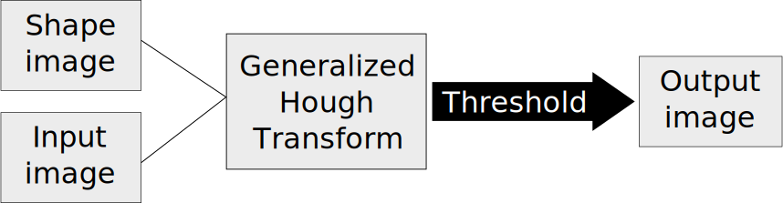
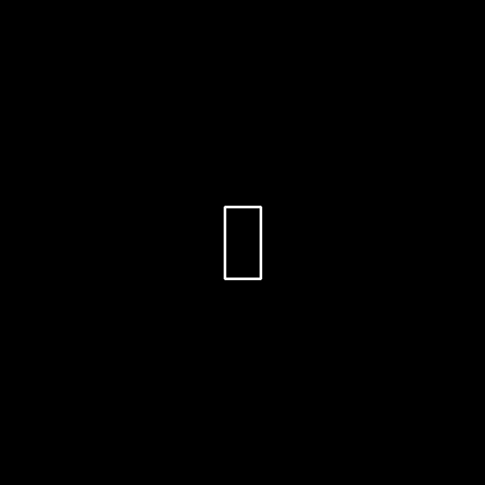
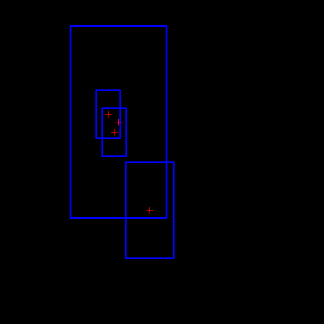

Generalized Hough transform
Hough transform was originally proposed to detect circles in an image. It was later improvised to detect all parameteric shapes. The procedure is to find imperfect instances of objects within a certain class of shapes by a voting procedure. The voting is carried out in parameter space from which the object candidates are obtained as local maxima in accumulator space. This project further extends the algorithm to detect any arbitrary, non-parameteric shapes with different scaling. It uses gradient information around the centroid of the non-parameteric shape to accumulate bin array. Thresholding the bin array gives the centroid of detected shape.
Block diagram

Block diagram
Non-parameteric shape

Shape to be detected
Input

Input image with salt and pepper noise
Output

Detected image
Reference